Radio, Radio and Stereo Tape Player and Stereo Tape Player Deck · 35-02-02c
Radio — Ford and Meteor
Removal
- Disconnect the battery ground cable.
- Remove the radio, windshield wiper, windshield washer, and intermittent windshield wiper control knobs.
- Remove the lighter element and pull off the heater switch knobs.
- Remove the ten screws retaining the instrument panel trim cover assembly and remove the assembly.
- Remove the lower rear radio support bolt (Fig. 1).
- Remove the three nuts retaining the radio to the instrument panel. Pull the radio part way out.
- Disconnect the power, antenna, and speaker. Remove the radio.
Installation
-
Position the radio part way onto the instrument panel (Fig. 1).
-
Connect the radio power, antenna, and speaker lead.
-
Position the radio all the way onto the instrument panel and install the lower rear support bolt. Then, fasten the radio to the instrument panel (Fig. 1).
-
Install the instrument panel trim cover.
-
Replace the lighter element and the control knobs.
-
Adjust the selector buttons for the desired stations.
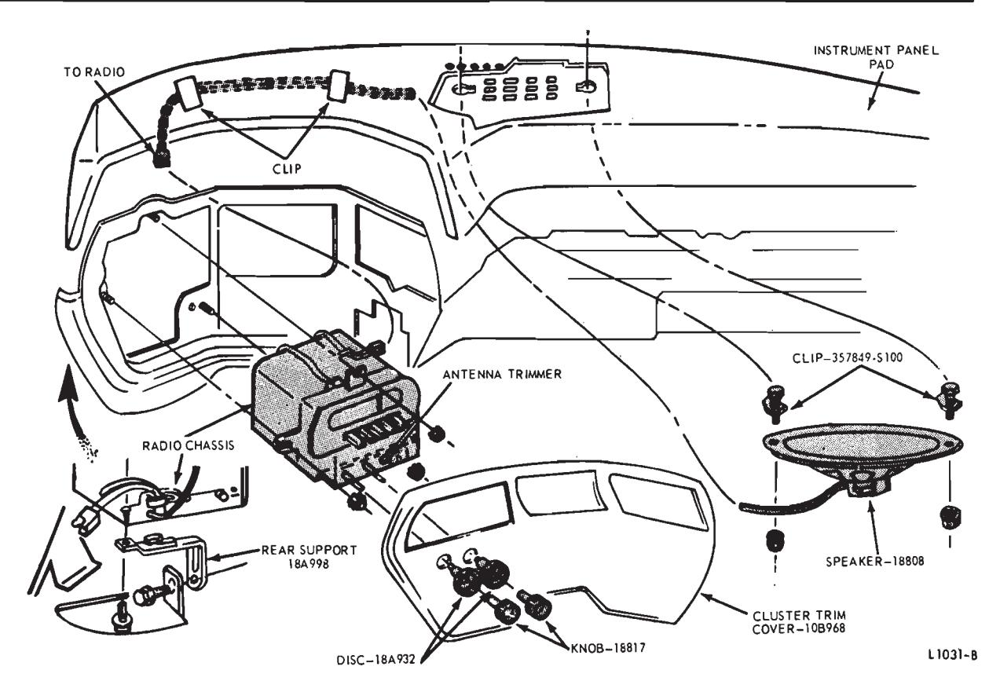
Fig. 1 — Ford and Meteor Radio Installation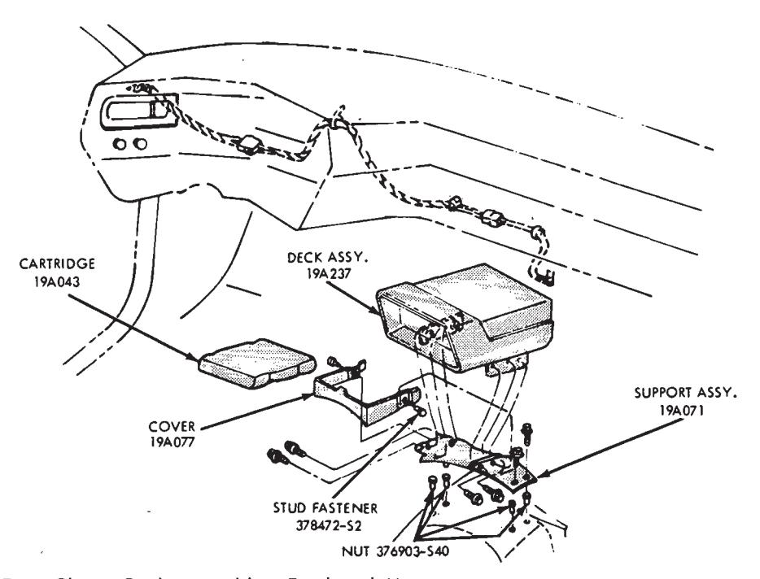
Fig. 2 — Stereo Tape Player Deck Assembly — Ford and Meteor
Tape Deck Player — Ford and Meteor
-
Remove two stud fasteners attaching the mounting bracket cover to the bracket (Fig. 2).
-
Disconnect the tape deck wires at the wire connector.
-
Remove four screws attaching the tape deck to the bracket, and remove the tape deck.
-
Position the tape deck to the mounting bracket and install the attaching screws.
-
Install the mounting bracket cover and connect the wires.
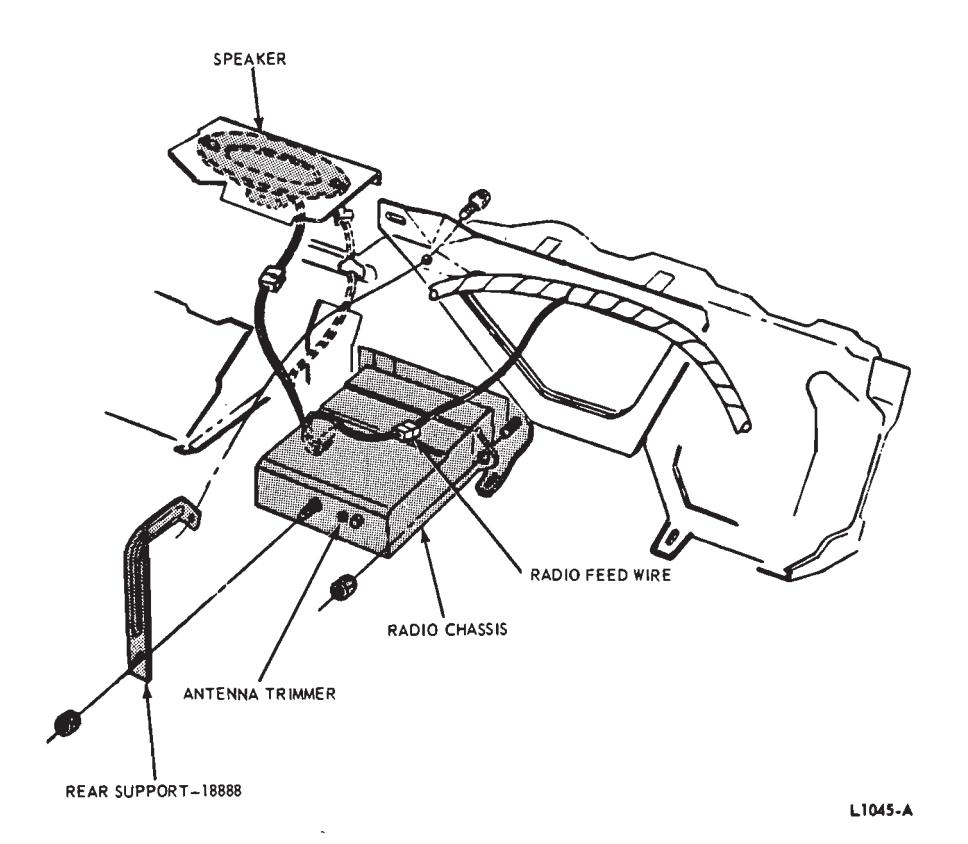
Fig. 3 — Mercury Radio Installation
Radio — Mercury
Removal
- Disconnect the battery ground cable.
- Remove the radio knobs and remove the nut from the radio shaft.
- Remove the radio lower rear support nut and the nut retaining the radio to the instrument panel (Fig. 3).
- Lower the radio and disconnect the antenna, radio power, and speaker lead wires. Remove the radio.
Installation
- Connect the radio antenna, speaker lead wires and radio power.
- Position the radio to the instrument panel and install the shaft nut.
- Install the two radio support nuts (Fig. 3).
- Replace the radio knobs and connect the battery.
- Check the radio for proper operation.
Radio — Maverick
Removal
- Disconnect the battery ground cable.
- Remove the radio rear support nut and lockwasher (Fig. 4).
- Remove the four radioto-instrument panel retaining screws.
- Pull the radio from the instrument panel and at the same time disconnect the antenna, power and speaker connectors.
- Remove the radio.
- Remove the knob and disc assemblies.
- Remove the two bezel retaining nuts and remove the bezel.
Installation
- Position the bezel on the radio and install the two bezel retaining nuts (Fig. 4).
- Install the disc and knob assemblies.
- Connect the antenna, speaker and power connectors.
- Position the radio so that the rear support mounting bolt enters the hole in the rear support mounting bracket.
- Install the four radioto-instrument panel retaining screws.
- Install the radio rear support nut and lockwasher.
- Position the speaker and power wire harnesses in the clip on the bezel
- Connect the battery negative ground cable.
- Check the operation of the radio.
- Adjust the selector buttons for the desired stations.
Radio — Mustang and Cougar
Removal
- Disconnect the battery ground cable.
- Pull the control knobs, discs and sleeve from the radio control shafts.
- Remove the radio applique from the instrument panel (Fig. 5).
- Remove the right and left finish panels.
- Remove the two mounting plate attaching screws (Fig. 5).
- Pull the radio out of the instrument panel and disconnect the wires from the radio.
- Remove the mounting plate and rear support from the radio.
Installation
- Install the mounting plate and rear support on the radio (Fig. 5).
- Position the radio near the radio opening and connect the wires to the radio.
- Install a jumper wire to ground the radio chassis to the instrument panel.
- Connect the battery ground cable and check the operation of the radio. Adjust the antenna trimmer.
- Disconnect the battery ground cable and remove the jumper wire.
- Insert the radio and wires into the instrument panel opening. Be sure the radio rear support slips over the instrument panel reinforcement (Fig. 6).
- Install the mounting plate attaching screws.
- Install the left and right finish panels.
- Install the radio applique, sleeve, discs, and control knobs.
- Connect the battery ground cable and set the radio push buttons.
Radio — Fairlane, Falcon, and Montego
Removal
-
Disconnect the battery negative (ground) cable.
-
Pull the radio control knobs off the radio shafts.
-
Remove the radio support to instrument panel attaching screw (Fig. 6).
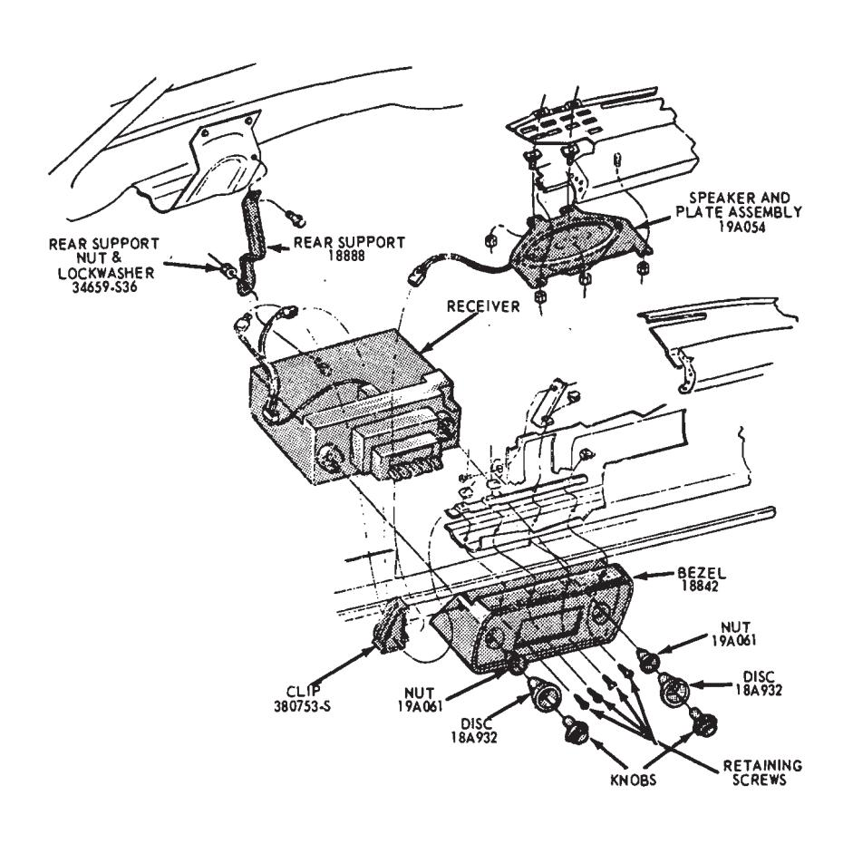
Fig. 4 — Maverick Radio Installation -
Remove the two bezel nuts from around the radio control shafts. Then, lower the radio and disconnect the speaker, power and antenna wires from the radio chassis.
Installation
- Connect the speaker, power and antenna wires to the radio chassis.
- Position the radio to the instrument panel and install the two bezel nuts. Torque the bezel nuts to 30-35 in-lbs torque.
- Install the radio support bracket to instrument panel attaching screw and torque to specification 30-35 inlbs torque.
- Connect the battery ground cable.
- Adjust the antenna trimmer, if necessary.
- Install the radio control knobs and set the push buttons for the desired stations.
Radio — Lincoln Continental
Removal
- Disconnect the battery ground cable.
- Remove the map light assembly.
- Remove the right and left inspection covers.
- Remove the lower instrument panel pad (Group 47).
- Remove the glove box. Open the ash tray and let it hang open.
- Remove the glove box switch.
- Through the glove box opening remove two nuts retaining the radio finish panel to the instrument panel.
- Remove the radio knobs.
- Remove two screws at the top of the finish panel. Position the panel out and disconnect the cigar lighter and light from the right panel.
- Through the glove box opening remove the nut from the lower right corner of the center finish panel.
- Remove the radio top support nut and the three mounting screws (Fig. 7). Pull the radio out, disconnect the power leads and the antenna cable, and remove the radio.
Installation
- Position the radio to the instrument panel, connect the antenna cable and the power leads. Install the three mounting screws and the top mounting nut.
- Position the radio finish panel and install the three mounting nuts at the right side and the two screws at the top.
- Connect the cigar lighter and glove box light.
- Install the radio knobs and close the ash tray.
- Install the glove box, and install the lower instrument panel pad (Group 47).
- Install the right and left inspection covers and the map light.
- Connect the battery ground cable.
- Set the station selector buttons and check the radio operation.
Radio — Thunderbird and Continental Mark III
Removal
- Disconnect the ground cable from the battery.
- Pull the knobs off the radio control shafts.
- Remove the cover plate located below the steering column.
- Remove the nut from the right radio control shaft.
- Remove six screws and remove the trim applique from in front of the radio (Figs. 7, 8 and 9).
- Remove the nut and washer from the right radio control shaft.
- Remove the screw attaching the front left side of the radio to the instrument panel.
- Remove the radio rear support attaching screw.
- Disconnect the radio power wires and speaker wires at the connectors.
- Disconnect the antenna lead-in cable and remove the radio.
Installation
- Connect the power, speaker, and antenna leads to the radio.
- Position the radio to the instrument panel and install the attaching screw at the left front side of the radio.
- Install the washer and nut on the radio right control shaft.
- Install the radio rear support attaching screw.
- Position the trim applique to the instrument panel and install the six attaching screws.
- Install the nut on the radio right control shaft.
- Install the discs, felt washer, and knobs on the radio control shafts (Figs. 13, 14 and 15).
- Install the cover plate below the steering column.
- Connect the ground cable to the battery.
- Check the operation of the radio, and set the push buttons.
Radio Interference Suppression
The interference suppression equipment installations for the various models are shown in Figs. 10 through
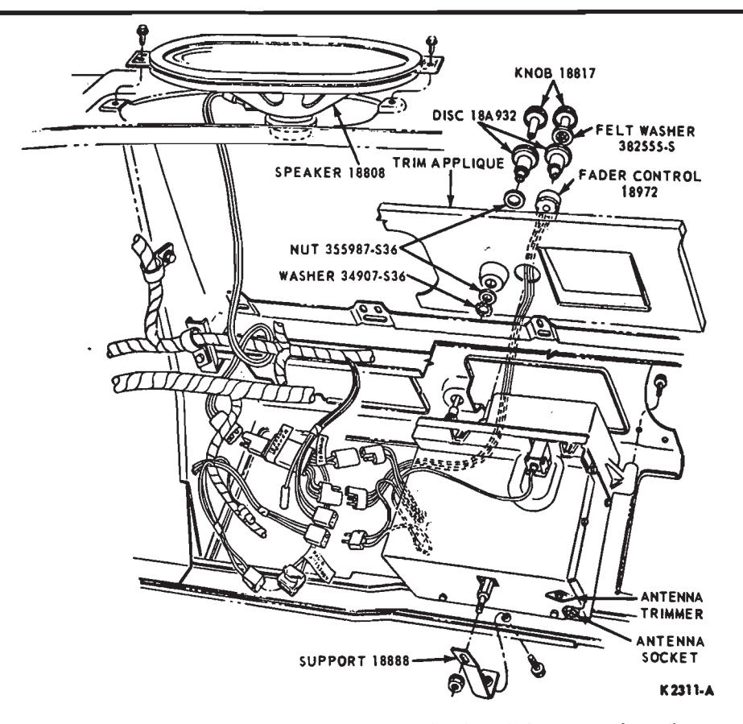
Fig. 7 — AM Radio Installation — Thunderbird and Continental Mark III
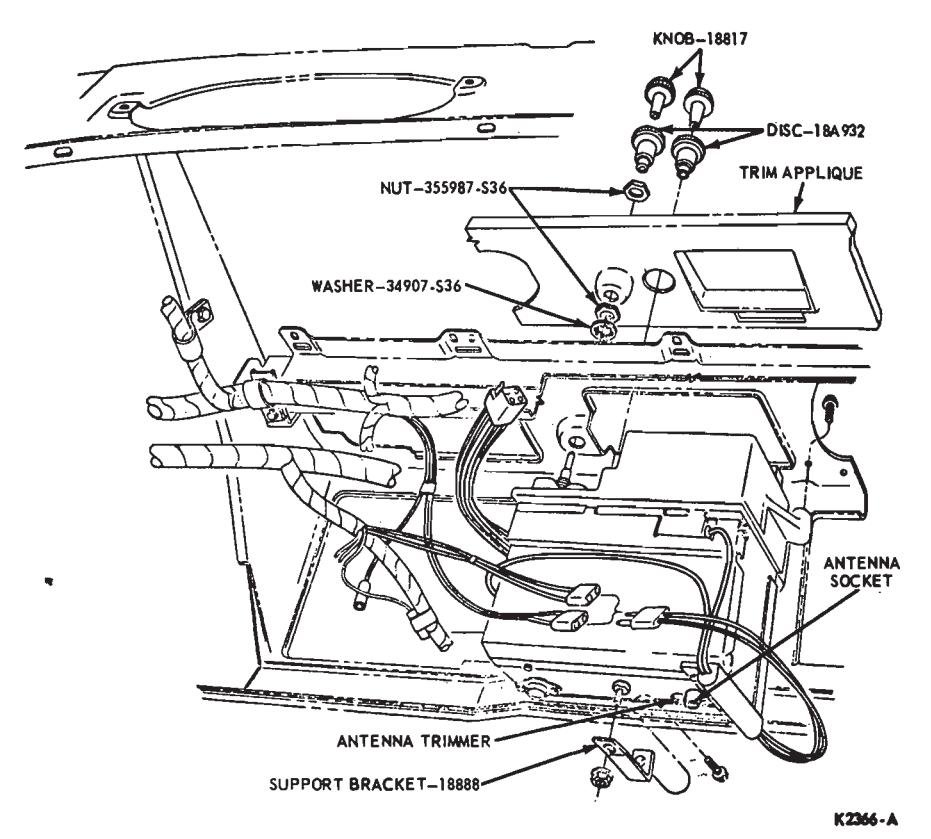
Fig. 8 — AM-FM Radio Installation — Thunderbird — Typical AM-FM Multiplex
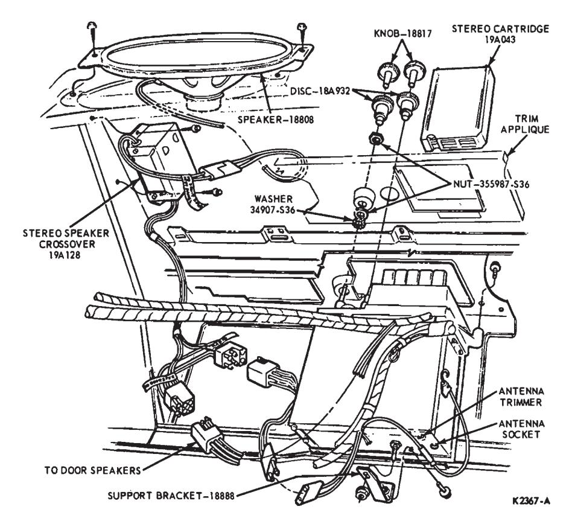
Fig. 9 — AM Radio — Stereo Tape Player Installation — Continental Mark III — Typical AM-FM Multiplex
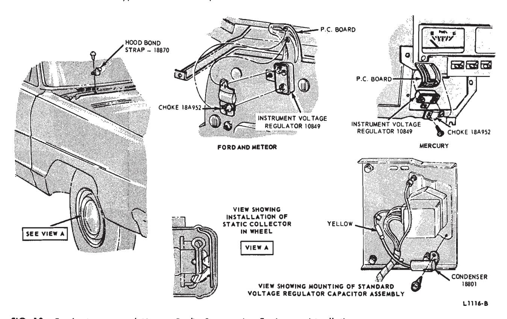
Fig. 10 — Ford, Mercury and Meteor Radio Suppression Equipment Installation
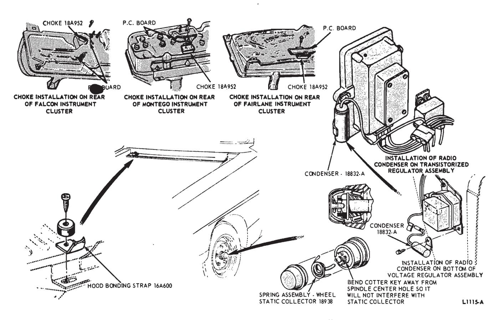
Fig. 11 — Falcon, Fairlane and Montego Radio Suppression Equipment Installation
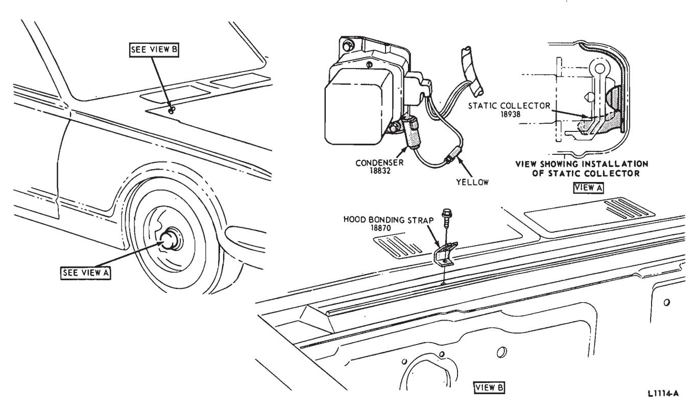
Fig. 12 — Mustang and Cougar Radio Suppression Equipment Installation
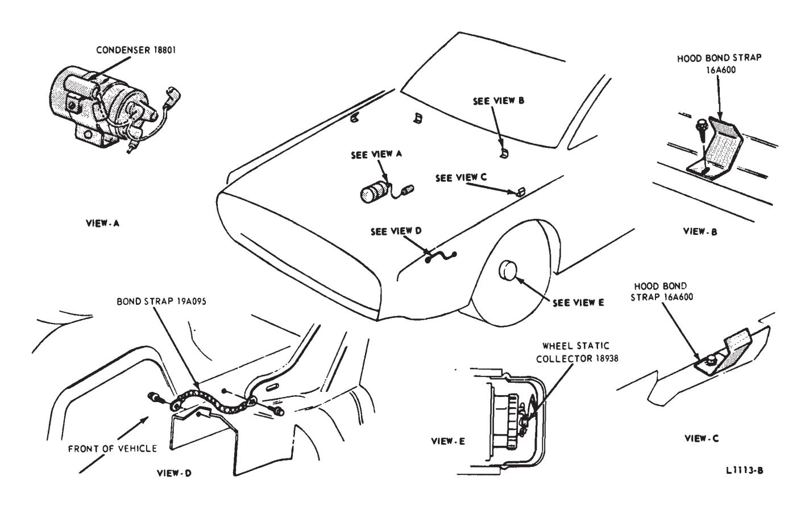
Fig. 13 — Thunderbird Radio Suppression Equipment Installation
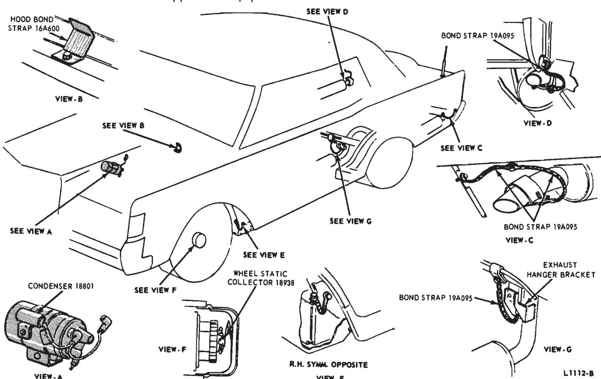
Fig. 14 — Continental Mark III Radio Suppression Equipment Installation
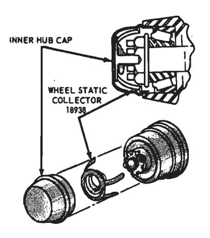
Fig. 15 — Lincoln Continental Radio Suppression Equipment Installation